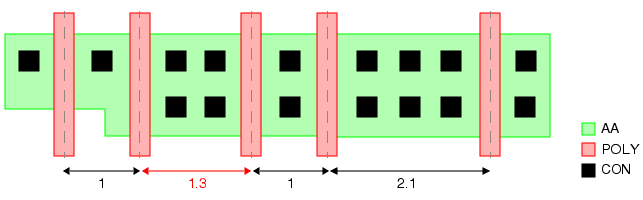

You can check
that the centerline-to-centerline spacing of gates within the same
active area are spaced with an integer pitch value relative to each
other.
Figure 1. Centerline Gate Pitch
In the figure, the pitch is specified as 1
and the optical radius is specified as 2. The spacing value of 1.3
does not pass the check because it is not an integer multiple of
1. However, the spacing value of 2.1 passes because it is outside
the optical radius value of 2.
Try It!
 |
Calibre Advanced DRC (eqDRC) Tutorial and Example Kit
Go to this page on Support Center
to download the complete eKit.
This example is in the grid_pitch_checks/gate_rel_pitch
example directory.
|
Procedure
- Derive the gate layer and
define the pitch, optical radius, and maximum gate width values.
gate = POLY AND AA
VARIABLE optradius 2
VARIABLE pitch 1
VARIABLE max_width 0.5
- Generate centerlines for each
gate.
gate_widths = DFM SPACE gate <= max_width BY INT HORIZONTAL
gate_cl = DFM COPY gate_widths CENTERLINE
- Measure the distances between
centerlines with DFM Space. Use the GRID keyword to output centerlines
not on the given pitch. The ALL keyword is needed because DFM Copy
with CENTERLINE produces edges that face arbitrary directions.
gate_cl_offpitch = DFM SPACE gate_cl <= optradius
ALL HORIZONTAL GRID pitch
- Write a DFM Property operation
that performs these functions:
Filter out
spacing errors between different active area regions using a constraint
of COUNT(AA) == 1 with a non-persistent property.
Perform the
pitch calculations, The properties generated tell you by what value
the spacing should be changed, the deviation from the correct pitch
value as a percentage, the number of pitch values, and the spacing
distance.
gate_pitch_err = DFM PROPERTY gate_cl_offpitch AA OVERLAP MULTI
[- = COUNT(AA)] == 1
[change_space_by = REMAINDER(EW(gate_cl_offpitch),pitch)] != 0
[pct_off_pitch =
ROUND(ABS(100*(PROPERTY_REF(change_space_by)/pitch)))]
[num_pitches = ROUND(EW(gate_cl_offpitch)/pitch, 0.1)]
[distance = EW(gate_cl_offpitch)]
- Output the results using a
DFM RDB operation.
gate_pitch {
DFM RDB gate_pitch_err "eqdrc.rdb" CHECKNAME "%_l_"
CELL SPACE ALL CELLS
COMMENT "Within each AA region, output gate centerlines "
COMMENT "that are not on pitch of ^pitch"
}